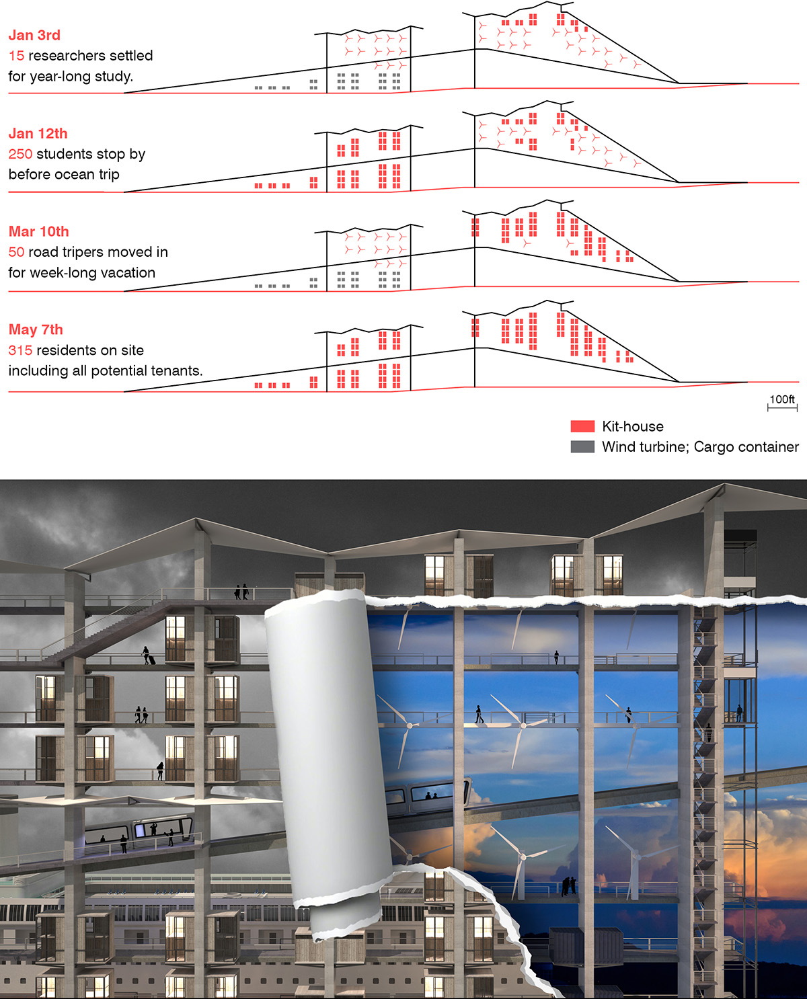

EXPORTABLE VILLAGE
The name ‘Exportable Village’ corresponds to exportable kit-houses that are produced on site and sold to worldwide market in addition to serving transient visitors in the village.

During the vacancy periods, kit-houses are disassembled to leave rooms for complementary programs. Upper levels turn into wind power stations with turbine installments; lower-level stacks become container storages for cargo shipments. Although the infrastructure is set to be permanent, the village transforms its offerings in response to temporal scenarios.
